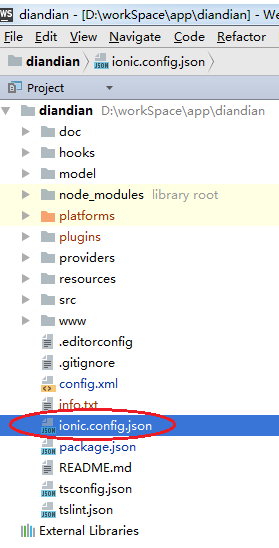
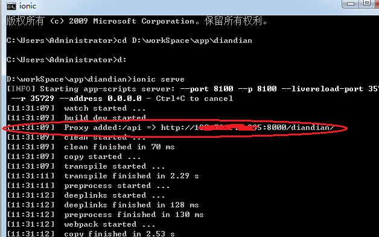

Ionic2 Ionic Serve跨域问题解决方法
简单来说，因为真机里网页的访问走的是file://协议，而非http://或https://，因此不会出现跨域问题，但是浏览器里开发调
试的时候，由于实际上是ionic的CLI在本地跑了一个小服务器，网页等资源都是通过http加载的，就会出现跨域问题。
解决这个其实很简单，后端服务器不需要做任何处理，只需要在ionic的配置文件（ionic.config.json）里加上proxy这个字段，
设置ionic代理
项目目录如下图所示：
修改红色圈圈文件
文件ionic.config.json内容为：
{
"name": "Ionic2SexyGallery",
"app_id": "",
"proxies": [{
"path": "/api",
"proxyUrl": "http://www.tngou.net/tnfs/api"
}]
}
然后运行项目,红色圈圈表示代理已经配置，所有../api的uri都会被转为http://xxx.xxx.xxx.xxx:port/diandian/
